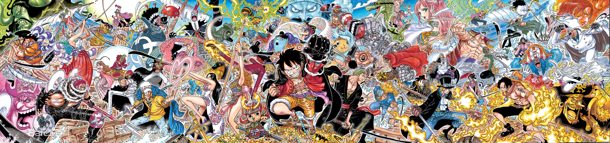

| 首页 |  |
| 作品简介 | |
| 故事背景 | |
| 剧情介绍 | 故事背景 |
| 作品评价 | 拥有财富、名声、权力，这世界上的一切的男人 “海贼王”哥尔·D·罗杰，在被行刑受死之前说了一句话，让全世界的人都涌向了大海。“想要我的宝藏吗？如果想要的话，那就到海上去找吧，我全部都放在那里。”，世界开始迎接“大海贼时代”的来临 时值“大海贼时代”，为了寻找传说中海贼王罗杰所留下的大秘宝“ONE PIECE”，无数海贼扬起旗帜，互相争斗。有一个梦想成为海贼王的少年叫路飞，他因误食“恶魔果实”而成为了橡皮人，在获得超人能力的同时付出了一辈子无法游泳的代价。十年后，路飞为实现与因救他而断臂的香克斯的约定而出海，他在旅途中不断寻找志同道合的伙伴，开始了以成为海贼王为目标的冒险旅程。 |
| 个人感想 | |
| 彩蛋 |